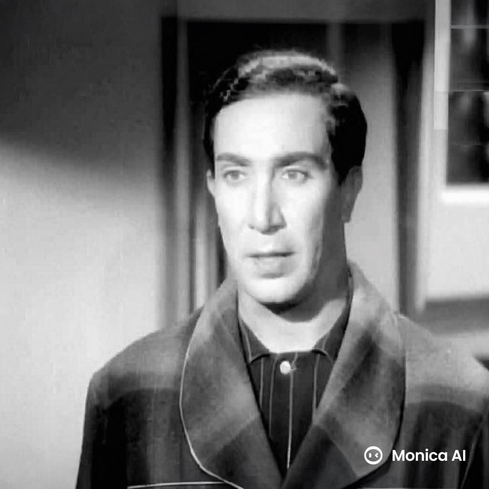
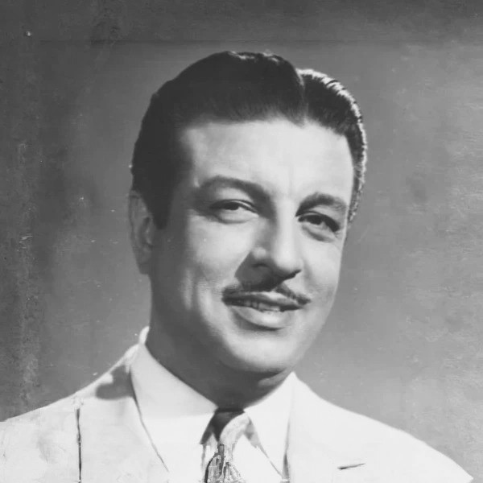
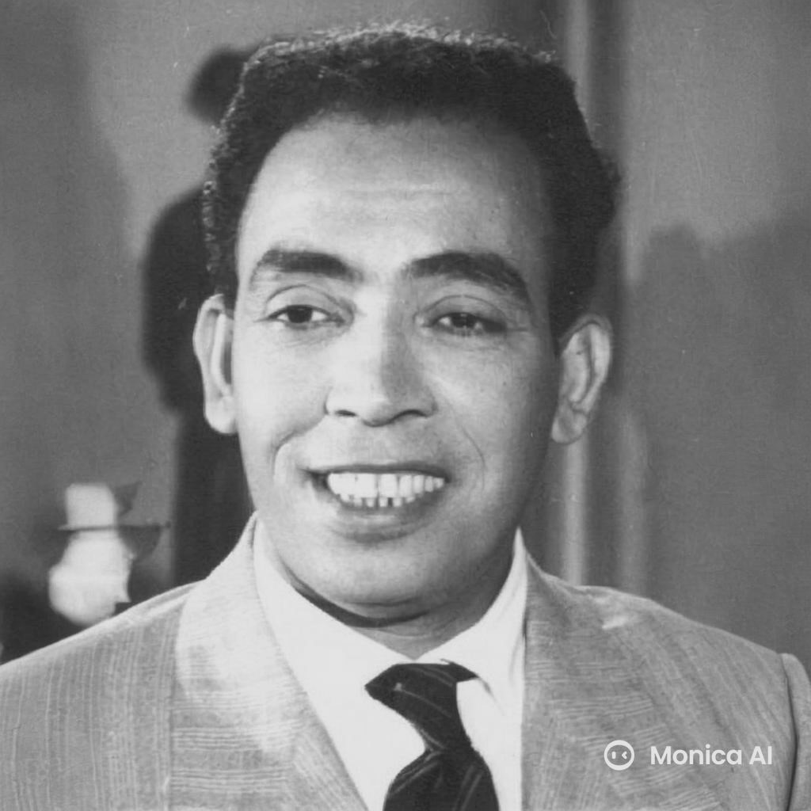
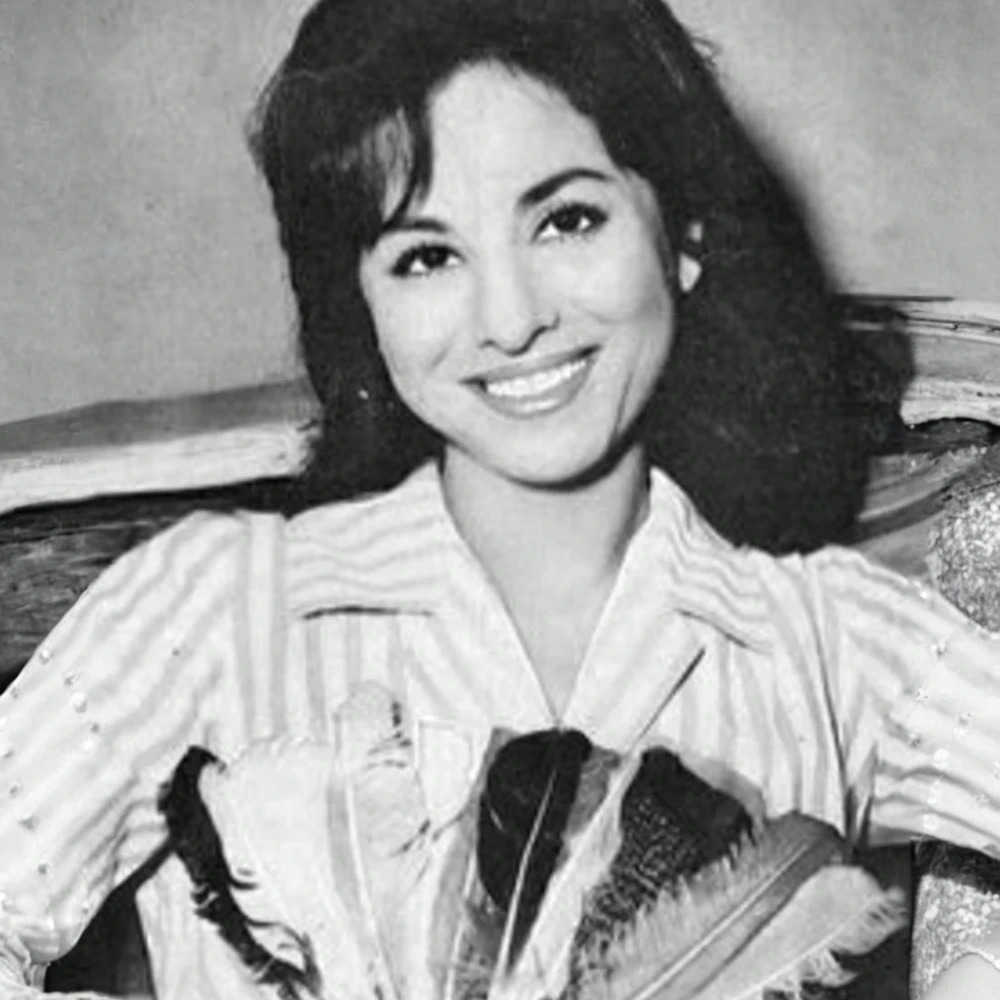
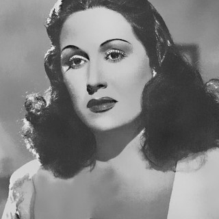

1.Youssef Wahbi (1898:1982)

He came from an aristocratic family, studied acting in
Italy. He introduced realistic acting techniques to Egypt.
And he helped elevate theater to a respected art form.
Youssef Wahbi Founded the Ramses Theater Company in the
1920s. He starred in silent and early sound films like Awlad
al-Zawat (Children of the Aristocrats).
He also wrote and directed dozens of plays and films,
influencing generations of actors.
Some of his famous work was:
- Ghadat al-Sahara
- Al-Millionaire (The Millionaire)
- Bidaya wa Nihaya (A Beginning and an End)
- Al-Katiba al-Mukhafiya (The Secret Battalion)
- Al-Aydi al-Na’ima (The Soft Hands)
Known For:
He was known for his serious tone and dramatic
expressions,
often playing noble or tragic characters.
2.Anwar Wagdi (1904:1955)

He started as a stage actor and rose to stardom in Egyptian
cinema. Anwar Wagdi was a multi-talented figure who
was an actor,screenwriter, and director.
Married to singer-actress Laila Mourad, forming a golden on
screen.
Some of his famous work was:
- Ghazal Al Banat (The Flirtation of
Girls)
- Laila Bint al-Fuqara
- Al-Wahidah
- Sitt Al-Bayt (Lady of the House)
- Aql Imra’ah (A Woman’s Mind)
Known For:
He was known for romantic dramas and melodramatic stories
that deeply moved Egyptian audiences.
3.Ismail Yassine (1912:1972)

He started as a monologist (a form of solo stand-up
comedy) before joining the film world. Ismail Yassine became
the face of Egyptian comedy, appearing in over 200 films.
He was so loved by all Egyptian, His humor was accessible
and relatable to all social classes. He was Master
of physical comedy.
Some of his famous work was:
- Ismail Yassine in the Army
- Ismail Yassine in the Police
- Ismail Yassine in the Navy
Known For:
He was known for his slapstick humor and has been
compared to Charlie Chaplin.
4.Faten Hamama (1931:2015)

she entered film at age 7 and became one of the most
respected actresses in Arab cinema.
Faten Hamama was called “The Lady of the Arabic Screen,”
she had an acting career that spanned over 60 years. She
advocated for women’s rights through her roles. Faten
Hamama married to Omar Sharif, another legendary
Egyptian actor.
Some of her famous work was:
- Sira Fi Al-Wadi (Struggle in the Valley)
- Doaa al-Karawan (The Nightingale’s Prayer)
- Imbratoriyat Meem (Empire M)
Known For:
She was known for elegant, strong, and emotionall
complex performances.
5.Laila Mourad (1918:1995)

she was born into a musical family; Jewish-Egyptian
origin,her father, Zaki Mourad, was a respected singer
and cantor..She combined singing and acting to become
one of the top film stars in the 1940s and 50s.
Laila Mourad was one of the most iconic singer-actresses
in the golden age of Egyptian cinema. She studied music
from a young age and began her singing career on
Egyptian radio. She retired early from public life in
the mid-1950s, withdrawing from music and cinema for
personal and political reasons.
Some of her famous work was:
- Layla Bint al-Fuqara (Layla, Daughter of the Poor)
- Ghazal Al Banat (The Flirtation of Girls)
- Layla
- Shahrazad
- Albi Daleeli (My Heart is My Guide)
Known For:
She was Married to Anwar Wagdi, but the marriage
ended in divorce after a few years. She was also a
symbol of elegance, romance, and patriotism. Her
films and songs are still broadcast during Ramadan,
on classical radio stations, and in cultural
celebrations.